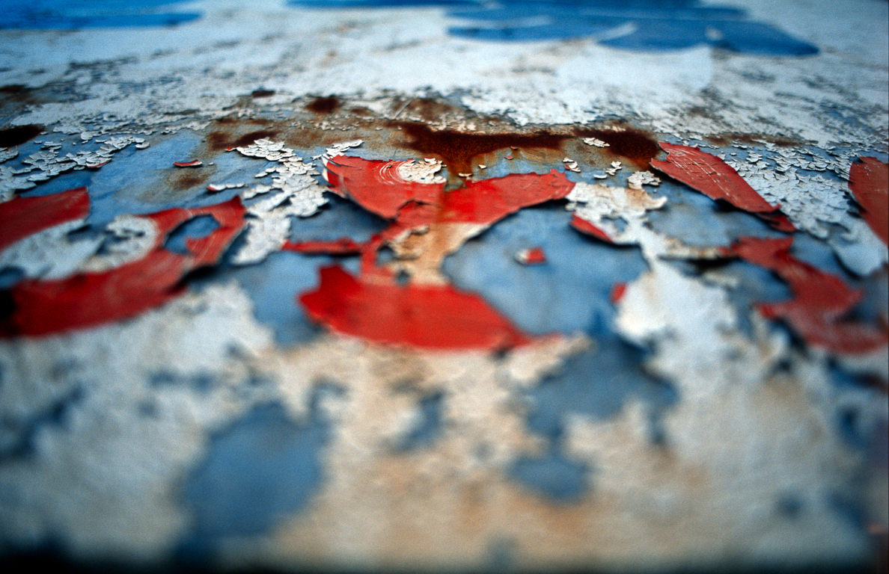
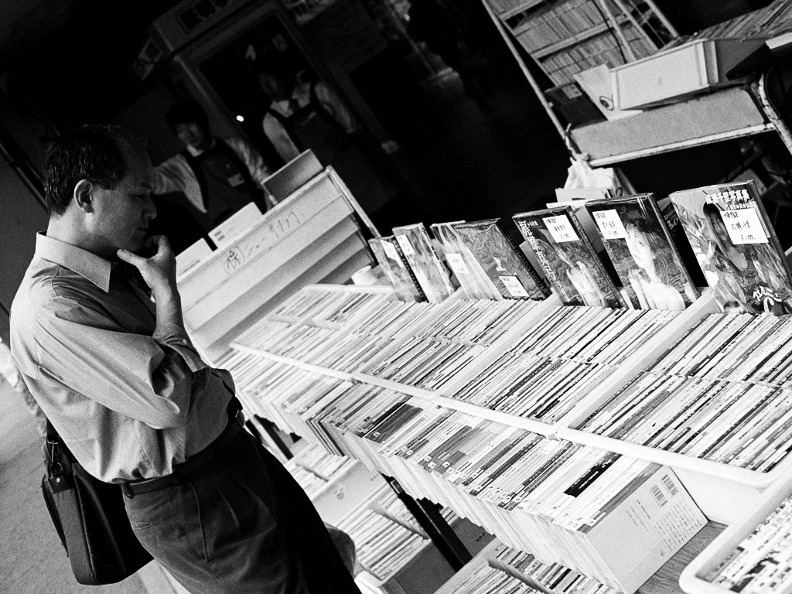
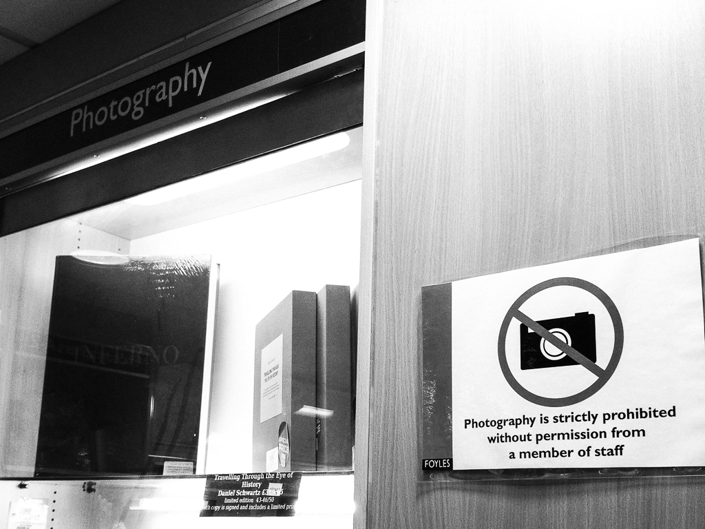

Aesthetics and practice of a rusting Web
<
Paris Web 2013
Cashier Receipt Aesthetics
Infobesity and throwable information
Why erasing?

Who is making the choice?

http://www.w3.org/2001/tag/2013/05/29-agenda

Web management and its content
Dates: HTTP, URI and Content
Digital information conservation

Duplicating as a resilience model
Distribution and ownership
Authors rights and licences

Understanding its material
<
Embracing the evanescence